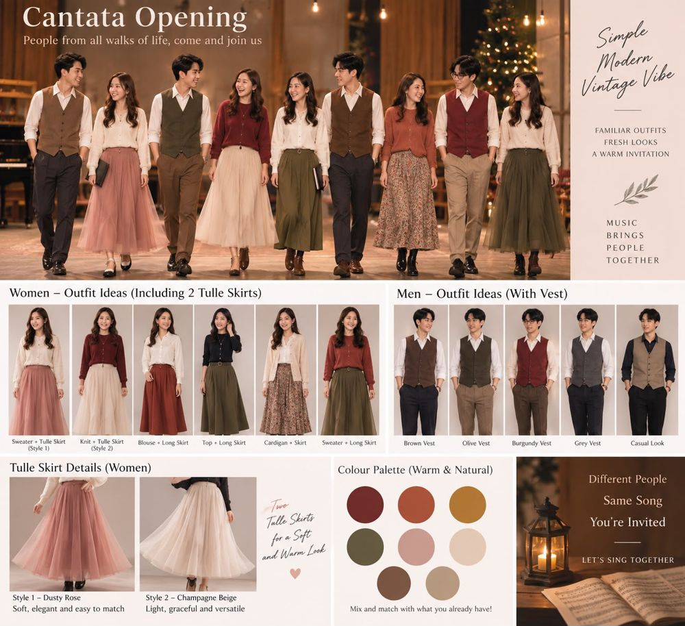

詩班服裝指引
Choir Dress Code
男生：恤衫、西褲、西裝背心，皮鞋。
Men: dress shirt, dress trousers, suit vest, leather shoes.
女生：恤衫或薄冷衫配 A-line 長裙（裙長最短為腳眼對上約三吋），皮鞋或素色 boots。款式簡單莊重，避免毛毛、閃石等誇張或暴露款式。
Women: blouse or lightweight knit with an A-line long skirt (no shorter than about 3 inches above the ankle), leather shoes or plain boots. Keep it simple and modest, avoiding fur, sequins or revealing styles.
顏色：可自由揀選圖中任何配搭。唔需要一模一樣，可善用已有衣物。
Colours: choose any combination from the picture. No need to look identical. Use what you already have.
詩袍由我哋帶到場，成員唔使自備。
Choir robes will be brought by us. No need to prepare your own.

各聲部服裝負責人 Costume contacts
S1
Polly
Polly
S2
Ashley, Shirley Walker
Ashley, Shirley Walker
Alto
Mary
Mary
Tenor
Jenny
Jenny
Bass
Ashley
Ashley
Angels Choir 家長須知
Notes for Parents
Angels Choir 大部分小朋友嘅家長都係成人詩班成員，演出當日會與家長一同到場。
Most Angels Choir parents are members of the adult choir. Your child will travel and stay with you on the day.
非詩班成員嘅家長，建議只由一位家長陪同小朋友，因為各教會座位非常有限，多謝體諒。
Parents who are not in the choir: we suggest that only ONE parent accompanies your child, as seating at the churches is very limited. Thank you for your understanding.
總綵排、12/12 及 13/12 請自備午餐。Portsmouth 提供午餐，Kings Cross 提供輕食，如小朋友有食物敏感，請自行準備。
Please bring your own lunch for the dress rehearsal, 12/12 and 13/12. Lunch is provided at Portsmouth and a light lunch at Kings Cross. If your child has food allergies, please prepare your own.
整體以暖色系為主。女孩可穿長裙或寬闊褲子，男孩以吊帶或 vest 為主。如男孩冇 vest 或吊帶，請告知我哋，我哋會準備。
Warm colours preferred. Girls may wear a long skirt or wide trousers. Boys are encouraged to wear suspenders or a vest. If your son does not have one, let us know and we will prepare it.
事奉小組
Service Teams
物資小組
Supplies Team發 and 2 位姊妹（負責詩袍分派） 待確認 TBC
Supplies Team發 and 2 位姊妹（負責詩袍分派） 待確認 TBC
化妝小組
Makeup TeamPolly, Ashley, Shirley Walker, Teresa, Cathleen
Makeup TeamPolly, Ashley, Shirley Walker, Teresa, Cathleen
祈禱小組
Prayer TeamNatalie Har
Prayer TeamNatalie Har
交通小組
Transport Team待確認 TBC
Transport Team待確認 TBC
當日其他服事 Other services on the day
接待小組、茶點小組、場地小組。歡迎參與，一同體會全教會一起服事的美好。
Hospitality Team, Refreshments Team and Venue Setup Team. Please join us and experience the beauty of serving together as a church.
代禱
Prayer
禱告會：25/11 (三) 晚上 8:30，Zoom。
Prayer meeting: Wed 25 Nov, 8:30 pm on Zoom.
禱告牆 Padlet：歡迎留言代禱。
Prayer board on Padlet: you are welcome to leave a prayer.
每日代禱輪值表 Daily Prayer Rota
粗體為演出日。Bold dates are performance days.
| 詩班員 Choir member | 發佈日期 Date |
|---|---|
| Jenny | 25 Nov 2026 |
| Abbie | 26 Nov 2026 |
| Rayan | 27 Nov 2026 |
| Zikey | 28 Nov 2026 |
| 待定 TBC | 29 Nov 2026 |
| Cathleen | 30 Nov 2026 |
| Shirley Walker | 1 Dec 2026 |
| Tiffany | 2 Dec 2026 |
| Abigail | 3 Dec 2026 |
| Salome | 4 Dec 2026 |
| Angela | 5 Dec 2026 |
| Polly | 6 Dec 2026 |
| Teresa | 7 Dec 2026 |
| Fat | 8 Dec 2026 |
| Dennis | 9 Dec 2026 |
| Jeanne | 10 Dec 2026 |
| Joe | 11 Dec 2026 |
| CMO | 12 Dec 2026 |
| Sharon | 13 Dec 2026 |
聖誕節事工
Christmas Ministry
今年聖誕節將以《困倦世人當歡欣 A Weary World Rejoice》為主要事工，藉著詩班員和天使詩班，一同以詩歌見證耶穌基督的誕生並邀請為世人所帶來真正的盼望。
This Christmas, our main event is the Christmas Cantata, A Weary World Rejoice. Through the choir and the children's choir, we witness the birth of Jesus Christ and the true hope He brings to the world through songs.
5/12 Portsmouth 及 6/12 Kings Cross 與當地教會合辦，12/12 及 13/12 為 CCEMC 教會事工，歡迎邀請新朋友一同參加。
5/12 and 6/12 are co-organised with the local churches. 12/12 and 13/12 are the ministry of our own church, and we warmly invite new friends to join us.